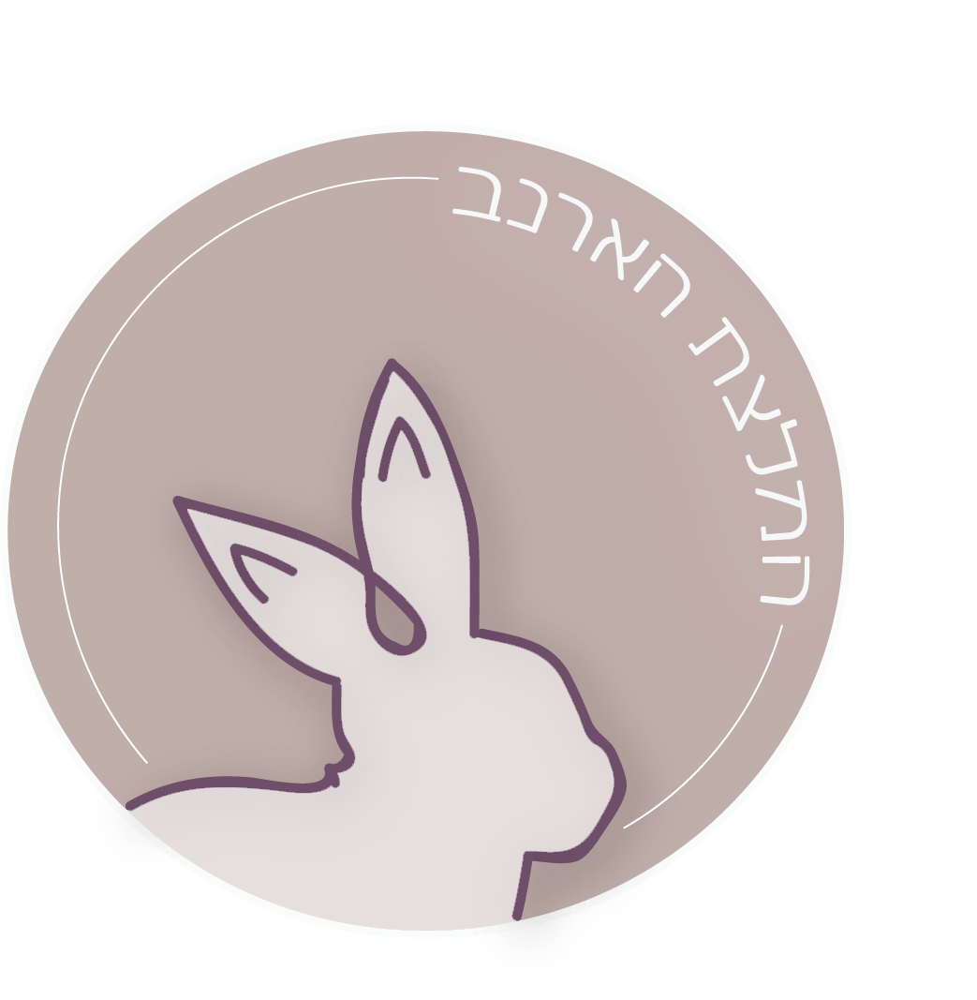

להיות טבעוני בבית זה פשוט למדי. כשמתרחקים מהבית ומההרגלים הקבועים, העניינים מתחילים להסתבך. כשמתגייסים לצה"ל, הטבעונות הופכת כבר לאתגר של ממש.
כיצד מתמודדים
חיילים טבעונים זכאים במהלך שירותם הצבאי להתאמות שונות שיאפשרו להם להמשיך ולקיים את אורח חייהם גם במסגרת הצבאית. עד לכתיבת שורות אלו, נדרשו החיילים הטבעוניים להצהיר על הימנעותם מאכילה, צריכה ושימוש במוצרים מן החי ובתמורה קיבלו שכר חודשי לרכישת מזון וביגוד בעצמם.
החל ממאי 2017 יבוטל נוהל הצהרת טבעונות וכל חייל יהיה זכאי לדרוש ציוד וביגוד טבעוני. בנוסף, בחדרי האוכל בבסיס יוגשו מנות טבעוניות. על כן, מרגע הנחיתה בבקו"ם ועד לשחרור מהצבא, תוכלו לבקש בכל עת ציוד טבעוני (כומתה, נעליים, שק שינה ועוד..), ללא צורך בהצהרה רשמית.
התגייסתי, ולמרות הנוהל החדש, בצה"ל סירבו לתת לי ציוד טבעוני, והארוחות בחדר-האוכל לא מספקות.
-
במקרה כזה, לרשותך מספר דרכים:
- הצגת הבעיה בשרשרת הפיקוד. תחילה למפקד הישיר, במידה ולא קיבלת מענה, ניתן לפנות למפקד המחלקה והפלוגה.
- ניתן להגיש בקשת קבילה לנציג קבילות החיילים על פגיעה בתנאי שירות הפרט.
ביגוד צבאי
עברתי את הבקו"ם, מה עכשיו? כעת, במהלך שירותכם הצבאי עליכם לשים לב לציוד שקיבלתם.
- לחלק מהקסדות רצועות מעור
- הסנדלים עשויות עור
- הכומתות עשויות צמר
- לחלק משקי השינה מילוי נוצות אווז

איפה מומלץ לקנות נעליים טבעוניות מותאמות לצבא?
אני ממליצה על חנות נעלי קטלינה ברחוב קינג ג'ורג' בתל-אביב. יש מגוון נעלי בובה, מגפי פלדיום, סנדלים ועוד, ללא מוצרים מן החי. יש בחנות ווייב צעיר, קולקציה מגניבה, ומחירים נוחים. בנוסף וחשוב! ניתן לבקש משלוח לכל מקום בארץ.